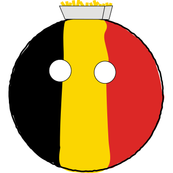

Het concept is simpel, ik maak van elk land een balletje en deze worden dan gestijld met de juiste karaktereigenschappen. Maar al gauw zag ik dat er een grote variatie moest bestaan voor het beeld om iets te zeggen, dus daar ga ik nu meer uitleg over geven. Duidelijk zal je zien dat sommige landen heel typisch gestijld zijn, waar sommige anderen zullen een diepere zin hebben.
Allereerst wil ik het hebben over Yugoslavië, een land dat tijdens wereldoorlog II redelijk nieuw was in de wereld en het kreeg al meteen het meest voorteffelijke leger van de wereld op hun dak. Ik zag dat weinig mensen stereotype beelden hebben bij dit land. Ik vond het wel een goed idee om te tonen hoe de kleinere staten uit de grote bal willen geraken door ze er fysiek uit te laten komen. Je ziet dan ook alle landen die onafhankelijk zijn geworden. Buiten Kosovo, Kosovo is stom.
Austrilië is een voormalige kolonie van het Verenigd Koninkrijk, dus ik ik kreeg de inspiratie van Ze op elkaar te laten lijken, met als uitzondering dat ik de sterren van de vlag gebruikte voor de monocle. Je ziet de twee hoeden naast elkaar, en Australië wordt in het werkstuk gezien naast de VS, als externe landen die toezien op de chaos in Europa.

Het onderwerp van WO II is nog steeds een gevoelig onderwerp, en paranoïde is om de hoek. Vandaag de dag nog worden de termen 'nazi' en 'antisemiet' rondgegooïd alsof ze een einde betekenen aan het debat waarover het ging. Ik wil eigenlijk met dit werkstuk kunnen aantonen dat wat er meer dan 70 jaar geleden gebeurde, ons niet meer kan raken. We moeten hier objectief en kritisch naar kijken. Het is dus OK om met beide partijen te lachen en ze belachelijk te maken. De duitse bal is geen bal maar een vierkant, dit vierkant heeft Oostenrijk al in zijn oppervlakte, zijn ogen zijn naar twee kanten gericht omdat er een oorlog is op twee fronten. De zeshoeken symboliseren de haat voor het jodendom, aangezien een davidster zes hoeken heeft.
Als eerste slachtoffer van de tweede grote oorlog, heeft Polen veel te verduren gekregen. Langs twee kanten werden ze overrompeld, maar we mogen nooit vergeten hoe goed de Polen eigenlijk weerstand konden bieden, de manier van aanvallen was gewoon zo nieuw en niet grondig begrepen. Polen krijgt een dikke nazi stempel op zijn hoofd, want hij wordt geannexeerd een als marionetstaat ingericht.
Nog steeds zeer gevoelig, ik vond het hel belangrijk om in 'Israëlbal' wat tijd te steken. De locatie is niet zomaar gekozen, ze bevinden zich in Beieren. De locatie van het eerste concentratiekamp gevonden door de Amerikanen. Israël is eigenlijk geen bal, maar een kubus, als je dat nog niet had gezien. Dit is een grapje als referentie naar hoe de Duitsere wetenschappers Einstein's theorie van relativiteit zagen. Ze noemden het 'joodse fysica'. In de 19de eeuw werden de theoriën van extra dimenties uitgewerkt en werden hypercubussen uitgewerkt als een concept. Duitse Joden hadden hierin een groot aandeel, vandaar...

Nepal heeft eigenlijk geen enkele significantie voor dit hele verhaal, maar het land heeft een geweldige vlag en ik wilde er iets van maken. Dus je ziet hier het eindproduct!